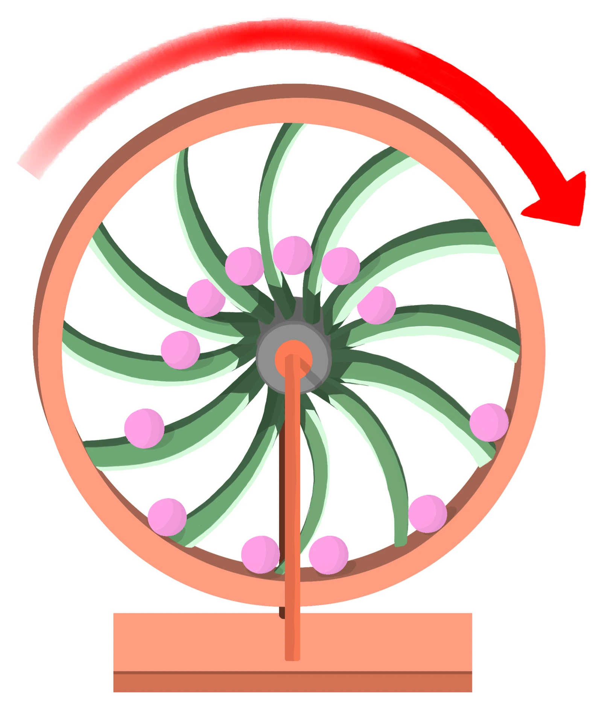

고2 물리학 · Ⅰ 힘과 에너지 · 웹툰 6화 「영원히 도는 바퀴」
영구기관은 불가능하다 — 에너지 보존과 열효율의 한계
실험에서 오버밸런스 바퀴·물레방아 + 펌프·바닷물 열로 가는 배·열기관 가운데 하나를 골라 처음 에너지 100 J를 넣고 30바퀴 돌리며, 부품 효율과 꺼내 쓰는 일을 바꿨습니다. 연료 없는 설계는 부품 효율을 100 %로 해도 일을 꺼내면 반드시 멈췄고, 넣은 에너지 = 꺼낸 일 + 열 + 남은 에너지가 언제나 맞았습니다. 제1종·제2종 영구기관이 불가능한 까닭과 열효율의 한계를 정리합니다.
- 웹툰 6화
- 실험: 영구기관 검사대
- 과학 원리
- 자습 노트
- 고2 물리학 목록
실험에서 얻은 것
실험 데이터 되짚기
실험 안내: 설계(4가지), 부품 효율(한 바퀴마다 남는 비율 50~100 %), 꺼내 쓰는 일(없음 · 한 바퀴마다 10 J)을 정하고 30바퀴 돌려 보기를 누르면 멈춘 시점, 꺼낸 일의 합, 넣은 에너지, 열·소리로 흩어진 에너지, 남은 에너지, 효율과 판정이 나옵니다. 결과는 자동으로 기록되며, 4개 이상 기록하면 기록별 효율 막대와 에너지 장부표를 볼 수 있습니다.
| 설계 | 부품 효율 | 꺼내는 일 | 멈춘 바퀴 | 꺼낸 일 (J) | 열·소리 (J) | 남은 (J) | 효율 (30바퀴 누적) |
|---|---|---|---|---|---|---|---|
| 오버밸런스 바퀴 | 100 % | 0 J | 30바퀴 뒤에도 돔 | 0 | 0 | 100 | 0 % |
| 오버밸런스 바퀴 | 100 % | 10 J씩 | 10바퀴째 | 100 | 0 | 0 | 100 % |
| 오버밸런스 바퀴 | 90 % | 10 J씩 | 7바퀴째 | 65.7 | 34.3 | 0 | 65.7 % |
| 물레방아 + 펌프 | 90 % | 10 J씩 | 6바퀴째 | 50.5 | 49.5 | 0 | 50.5 % |
| 오버밸런스 바퀴 | 90 % | 0 J | 30바퀴 뒤에도 돔 | 0 | 95.8 | 4.2 | 0 % |
| 열기관 (연료 30 × 100 J) | 90 % | 10 J씩 | 30바퀴 뒤에도 돔 | 300 | 2,546.8 | 253.2 | 9.7 % |
연료 없는 설계는 마찰이 전혀 없어도(100 %) 꺼낸 일의 합이 처음 넣은 100 J를 넘지 못하고 멈춥니다. 마찰이 있으면 더 일찍 멈추고, 물레방아는 두 부품을 거쳐 남는 비율이 0.9² = 0.81이라 바퀴보다 빨리 멈춥니다. 열기관만 계속 돌지만 그것은 연료를 계속 넣기 때문이며, 어느 기록이든 넣은 에너지 = 꺼낸 일 + 열·소리 + 남은 에너지입니다.
개념 정리
1. 에너지는 새로 생기지 않는다
닫힌 길을 한 바퀴 돌 때 중력이 하는 일의 합은 0입니다. 추를 바깥으로 밀어내는 오버밸런스 바퀴도, 물레방아로 펌프를 돌려 물을 다시 올리는 장치도 한 바퀴 뒤에는 에너지를 새로 얻지 못합니다. 여기에 마찰·소리·열로 새는 에너지가 더해지면 반드시 멈춥니다. 외부 공급 없이 일을 계속 꺼내는 제1종 영구기관은 에너지 보존 법칙(열역학 제1법칙) 때문에 불가능해요.
교재 그림
오버밸런스 바퀴 — 한쪽이 무거워 보여도

오른쪽 구슬은 축에서 멀지만 수가 적고, 왼쪽은 가깝지만 수가 많아 돌림힘의 합은 0입니다. 한 바퀴 돌아 제자리에 오면 중력이 한 일도 0 — 마찰로 새는 에너지만큼 결국 멈춥니다.
움직여 보기
영구기관 장부 — 한 바퀴마다 에너지는 어디로?
처음 100 J로 시작합니다. 효율 100 %·10 J씩이면 10바퀴째, 90 %면 7바퀴째에 멈춰요(표 1과 같음). 연료 없는 설계는 마찰이 없어도 꺼낸 일의 합이 100 J를 넘지 못합니다. 열기관만 계속 돌지만, 연료를 바퀴마다 100 J씩 넣기 때문이에요(그중 40 % × 부품 효율만 일로).
2. 열을 모두 일로 바꿀 수는 없다
- 열기관은 뜨거운 곳에서 열을 받아 일부를 일로 바꾸고, 나머지를 차가운 곳에 버려야 돕니다.
- 이상적인 한계(카르노 효율): emax = 1 − TC / TH (절대 온도). 500 K → 300 K면 40 %가 최대입니다.
- 바닷물처럼 온도가 하나인 열원만 있으면 TC = TH라서 emax = 0. 이것을 어기려는 장치가 제2종 영구기관이고, 열역학 제2법칙 때문에 불가능합니다.
교재 그림
열기관의 에너지 흐름

고열원(TH)에서 받은 열 QH = 일 W + 저열원(TL, 본문의 TC)에 버리는 열 QL. QL을 0으로 만들 수는 없습니다.
움직여 보기
열기관의 한계 — 열 100 J 중 일로 바꿀 수 있는 최대는?
500 K → 300 K면 최대 40 %(본문과 같음). T_C를 T_H까지 올려 온도가 하나뿐인 열원을 만들면 일은 0 — 바닷물의 열만으로 도는 제2종 영구기관이 불가능한 까닭입니다. 실제 엔진은 마찰·열 손실 때문에 이 한계보다 낮습니다(절대 온도 K 기준).
3. 이 실험의 계산 방법
Ek+1 = (남는 비율) × Ek + (열기관이 한 일) − (꺼낸 일), 효율 = 꺼낸 일의 합 ÷ 넣은 에너지의 합.
4. 실험 모형과 실제의 차이
· 실제 손실은 속도에 따라 달라지지만 여기서는 한 바퀴마다 같은 비율로 줄어든다고 단순화했습니다.
· 실제 자동차 엔진의 효율은 대략 20~40 % 정도로, 카르노 한계보다 낮습니다.
5. 생활 속에서 · 이어지는 개념
- 특허청은 영구기관 특허를 받아 주지 않습니다. "연료 없이 전기를 만든다"는 광고를 보면 에너지가 어디서 들어오는지부터 물어보세요.
처음 에너지 100 J · 30바퀴 · 물레방아의 남는 비율 = 부품 효율² · 열기관 한 회 일 = 연료 100 J × 0.4 × 부품 효율 · 자동차 엔진 실제 효율 약 20~40 %
“일을 꺼내면 반드시 멈춤 — 영구기관 실패”
실험 결과의 판정 · 연료 없는 설계에서 한 바퀴마다 10 J씩 꺼낼 때
예제
부품 효율 100 %인 오버밸런스 바퀴에 100 J를 넣고 한 바퀴마다 10 J씩 꺼낸다. 몇 바퀴째 멈추고, 꺼낸 일의 합은?
손실이 없으므로 에너지는 한 바퀴에 10 J씩만 줄어 100 ÷ 10 = 10바퀴째 0이 됩니다. 꺼낸 일의 합은 100 J — 처음 넣은 에너지와 같고, 그보다 많이 꺼낼 수는 없습니다(에너지 보존).
500 K → 300 K 사이에서 도는 열기관(부품 효율 90 %)에 연료 100 J를 넣으면 한 회에 얻는 일과 버리는 열은?
카르노 효율 = 1 − 300 ÷ 500 = 0.4. 한 회 일 = 100 × 0.4 × 0.9 = 36 J, 나머지 100 − 36 = 64 J은 열로 차가운 곳에 버려집니다. 열을 모두 일로 바꿀 수는 없습니다.